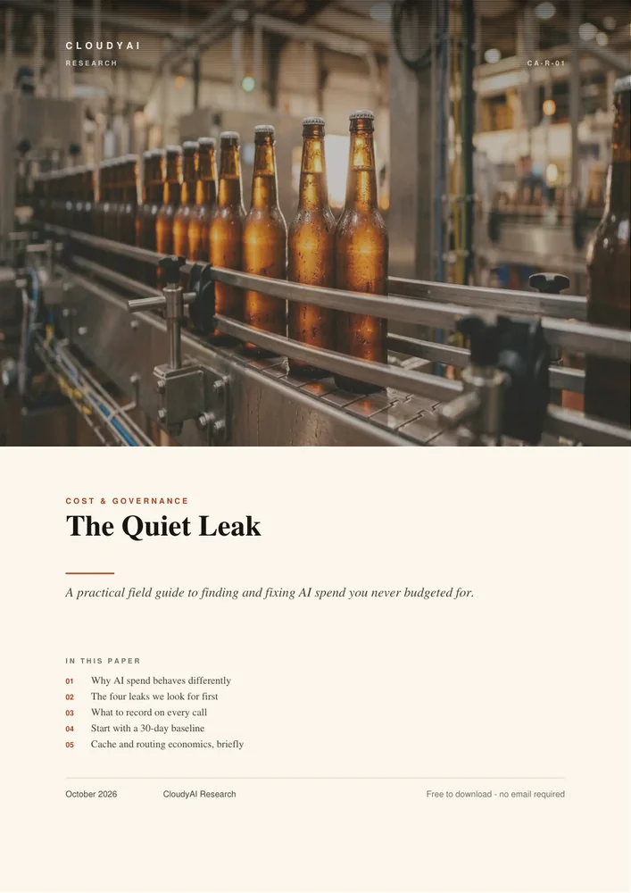
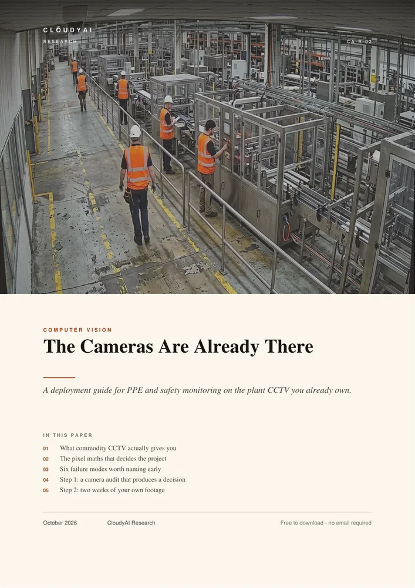
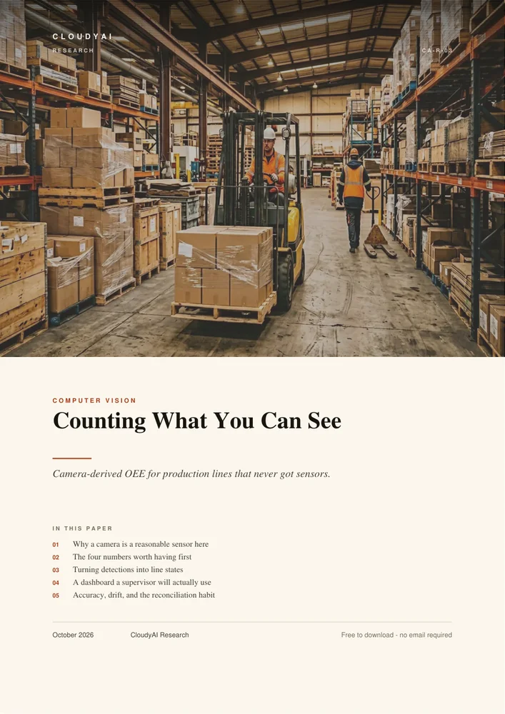
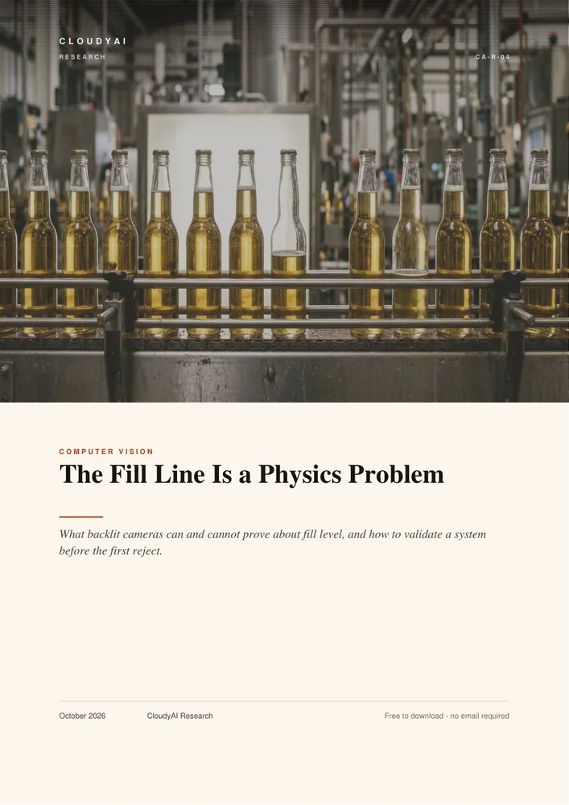
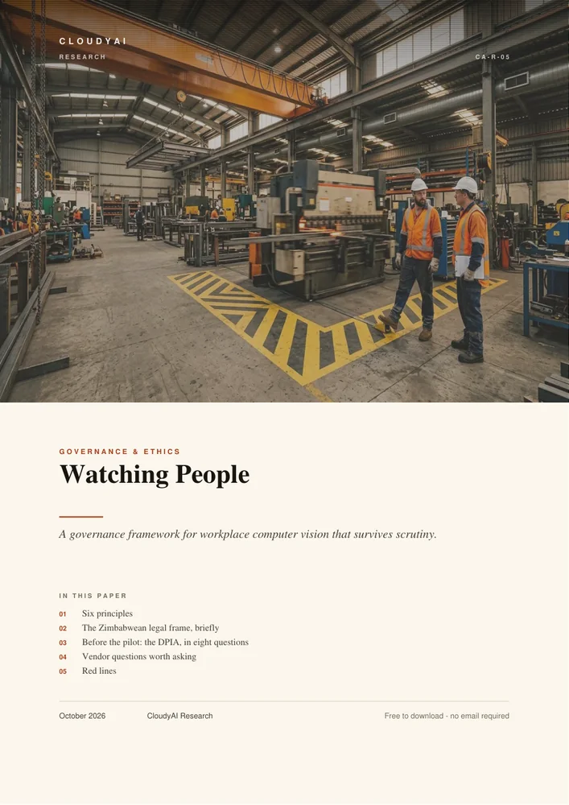
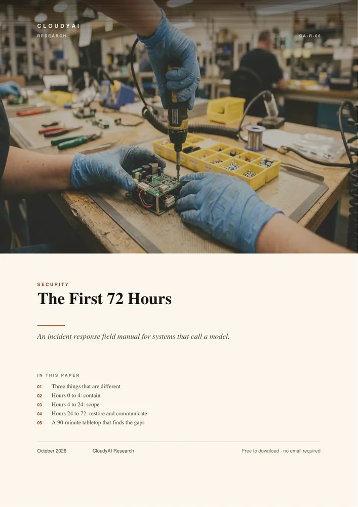

PDFCost & governance · CA-R-01
The Quiet Leak
Why AI budgets fail slowly rather than loudly, the four leak classes we look for first, and the monthly cadence that keeps the number honest.
Research library
These are working notes, not brochures. Each one covers something we have had to get right on a real site: the arithmetic in front of a camera quote, the optics that decide whether a fill check is possible, and the governance that decides whether a deployment survives its first year.
6 of 6 papers

PDFCost & governance · CA-R-01
Why AI budgets fail slowly rather than loudly, the four leak classes we look for first, and the monthly cadence that keeps the number honest.

PDFComputer vision · CA-R-02
The honest path from plant CCTV to a live safety signal — including the pixel maths that decides which cameras can see a hard hat, and which never will.

PDFComputer vision · CA-R-03
Camera-derived OEE for lines that never got sensors: micro-stops, changeover time, queue length, and the difference between blocked and starved.

PDFComputer vision · CA-R-04
Foam, meniscus, tinted glass and opaque containers decide whether fill-level inspection works long before any model does. Optics, reject logic, validation.

PDFEthics & governance · CA-R-05
A governance framework for workplace vision that survives scrutiny: purpose limitation, Zimbabwe's data protection Act, worker consultation, and our red lines.

PDFSecurity · CA-R-06
An incident response field manual for systems that call a model: containment, evidence sources, rollback decisions, and the tabletop that finds your gaps.
How these are made
Every paper starts as an internal note written for a specific job — a camera audit, a fill-line validation, an incident that went badly. We strip the client detail, keep the method, and publish it. Where we are uncertain, the paper says so.
They are not peer-reviewed and we do not pretend otherwise. If something here is wrong, we would rather hear it: research@cloudyai.co.zw. Corrections are noted in the next revision.
You are welcome to quote, share and circulate these papers with attribution to CloudyAI. For reproduction in a paid publication, ask first.
Reading order, if you have ten minutes
Send one still from each of your best three cameras. We will tell you which checks are realistic and which are wishes.